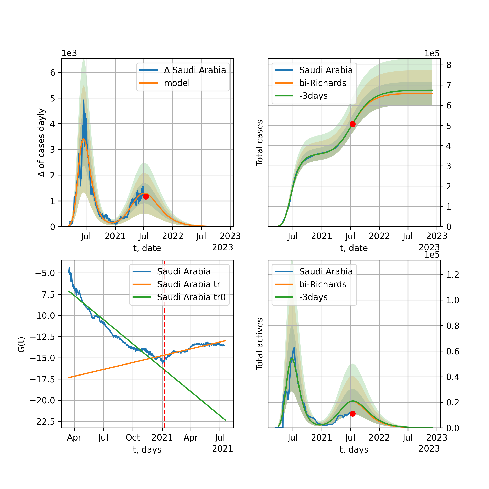
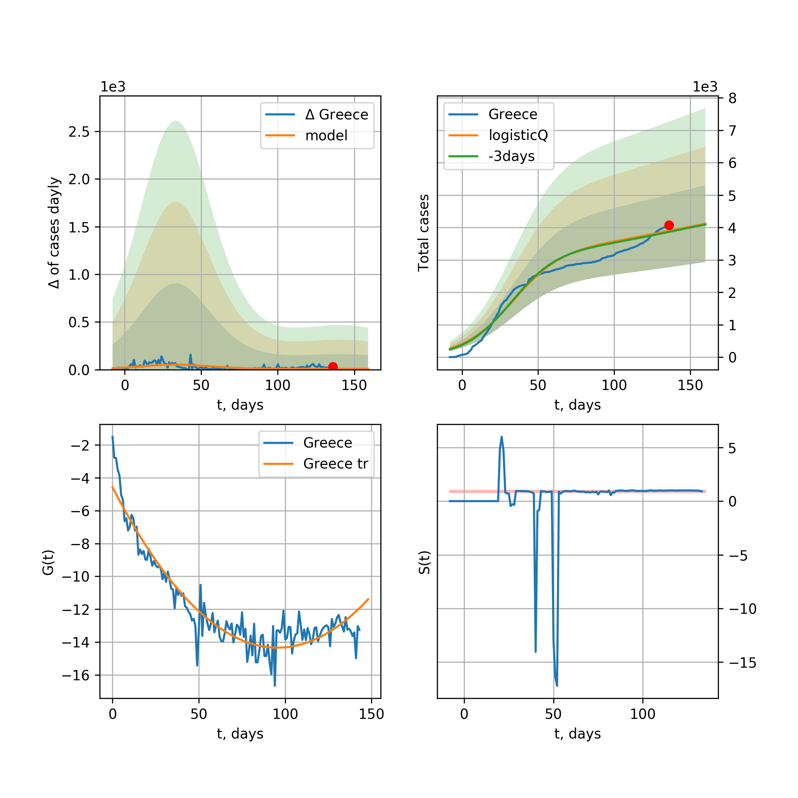

Multi-logistic model of COVID-19 dynamics
Model, code, results
Project maintained by algmaknick Hosted on GitHub Pages — Theme by mattgraham
World

World data at: 2020-06-08
+3 day model MAPE: 0.009532
model: bi-Richards
coeffs: [ 6.96732876e+06 2.31645909e+00 -2.50060977e+01 1.66014522e-02]
S.Korea scenario coeffs: [0.36242246, 2.56241634, 1.84890887, 0.13324732]
rational stdev: 0.087807
forecast at the end of period: +558 days
deltaDaycases: 1786
total cases: 14455872 ± 1269324
total death: 820618 ± 216167
bi-Richards approximation splitting point: 50
trend coefficient of determination: 0.841887
intercept: -2.312481
slope: -0.033509
trend coefficient of determination: 0.435734
intercept: -3.587845
slope: -0.008968
European Union

European Union data at: 2020-06-08
+3 day model MAPE: 0.006806
model: logisticQ
coeffs: [ 1.13707348e+06 3.46478075e-07 3.58790195e+01 -2.85630715e+05]
S.Korea scenario coeffs: [0.35416971, 0.02606324, 4.35859408, 19.30413219]
rational stdev: 0.339719
forecast at the end of period: +138 days
deltaDaycases: 393
total cases: 1531914 ± 520420
total death: 164549 ± 167701
trend coefficient of determination: 0.988150
intercept_: -7.9037565392112565
coeffs_: [ 0. -0.25840238 0.00142687]
Brazil

Brazil data at: 2020-06-08
+3 day model MAPE: 0.004932
model: logisticQ
coeffs: [ 1.46175796e+06 5.92819824e-06 9.05434517e+01 -1.19472147e+04]
S.Korea scenario coeffs: [0.35416971, 0.02606324, 4.35859408, 19.30413219]
rational stdev: 0.384435
forecast at the end of period: +418 days
deltaDaycases: 317
total cases: 1970588 ± 757563
total death: 103429 ± 119285
trend coefficient of determination: 0.904657
intercept_: -4.583285042546702
coeffs_: [ 0. -0.24413908 0.00128913]

Brazil data at: 2020-06-08
+3 day model MAPE: 0.016819
model: Richards
coeffs: [3.55172660e+06 9.80631832e-02 7.48169915e+01 3.31612345e-01]
S.Korea scenario coeffs: [0.36242246, 2.56241634, 1.84890887, 0.13324732]
rational stdev: 0.343025
forecast at the end of period: +1048 days
deltaDaycases: 5
total cases: 4838491 ± 1659725
total death: 253955 ± 261339
trend coefficient of determination: 0.570877
intercept: -3.877376
slope: -0.045074
Russia

Russia data at: 2020-06-08
+3 day model MAPE: 0.014313
model: Richards
coeffs: [ 6.56471025e+05 1.32424224e+00 -3.23962684e+01 3.26276893e-02]
S.Korea scenario coeffs: [0.36242246, 2.56241634, 1.84890887, 0.13324732]
rational stdev: 0.482675
forecast at the end of period: +348 days
deltaDaycases: 563
total cases: 852511 ± 411486
total death: 10679 ± 15463
trend coefficient of determination: 0.963843
intercept: -1.636569
slope: -0.036057
USA

USA data at: 2020-06-08
+3 day model MAPE: 0.012473
model: Richards
coeffs: [ 2.31280826e+06 4.31076486e+00 -8.41843788e+01 8.93075251e-03]
S.Korea scenario coeffs: [0.36242246, 2.56241634, 1.84890887, 0.13324732]
rational stdev: 0.329369
forecast at the end of period: +460 days
deltaDaycases: 856
total cases: 3083431 ± 1015587
total death: 172020 ± 169974
trend coefficient of determination: 0.943656
intercept: -1.337557
slope: -0.041451
Spain

Spain data at: 2020-06-08
+3 day model MAPE: 0.000560
model: Richards
coeffs: [ 2.93230678e+05 7.76550691e+00 -5.05941396e+01 7.85047740e-03]
S.Korea scenario coeffs: [0.36242246, 2.56241634, 1.84890887, 0.13324732]
rational stdev: 0.241217
forecast at the end of period: +278 days
deltaDaycases: 122
total cases: 393521 ± 94924
total death: 36976 ± 26757
trend coefficient of determination: 0.963204
intercept: -0.672940
slope: -0.062283
Italy

Italy data at: 2020-06-08
+3 day model MAPE: 0.000715
model: Richards
coeffs: [ 2.37368016e+05 6.01288449e+00 -5.19040483e+01 9.85209750e-03]
S.Korea scenario coeffs: [0.36242246, 2.56241634, 1.84890887, 0.13324732]
rational stdev: 0.074973
forecast at the end of period: +250 days
deltaDaycases: 153
total cases: 315527 ± 23656
total death: 45548 ± 10244
trend coefficient of determination: 0.985798
intercept: -1.092595
slope: -0.056867
United Kingdom

United Kingdom data at: 2020-06-08
+3 day model MAPE: 0.000870
model: Richards
coeffs: [ 3.16744416e+05 3.97701603e+00 -6.23372348e+01 1.16911231e-02]
S.Korea scenario coeffs: [0.36242246, 2.56241634, 1.84890887, 0.13324732]
rational stdev: 0.137884
forecast at the end of period: +348 days
deltaDaycases: 180
total cases: 419585 ± 57854
total death: 59269 ± 24516
trend coefficient of determination: 0.970568
intercept: -1.377504
slope: -0.045735
France

France data at: 2020-06-08
+3 day model MAPE: 0.005866
model: Richards
coeffs: [ 1.48932477e+05 5.57461444e+00 -2.03903276e+01 1.46274312e-02]
S.Korea scenario coeffs: [0.36242246, 2.56241634, 1.84890887, 0.13324732]
rational stdev: 9882.702316
forecast at the end of period: +110 days
deltaDaycases: 478
total cases: 180124 ± 1780112874
total death: 34122 ± 1011652705
trend coefficient of determination: 0.715034
intercept: -1.228780
slope: -0.053725
Germany

Germany data at: 2020-06-08
+3 day model MAPE: 0.003360
model: Richards
coeffs: [ 1.82116418e+05 1.15448974e+01 -4.78760773e+01 6.67065622e-03]
S.Korea scenario coeffs: [0.36242246, 2.56241634, 1.84890887, 0.13324732]
rational stdev: 0.218509
forecast at the end of period: +180 days
deltaDaycases: 156
total cases: 241957 ± 52869
total death: 11412 ± 7480
trend coefficient of determination: 0.951956
intercept: -1.328326
slope: -0.060968
Turkey

Turkey data at: 2020-06-08
+3 day model MAPE: 0.007453
model: Richards
coeffs: [ 1.69848919e+05 8.44153317e+00 -4.75235463e+01 7.74761045e-03]
S.Korea scenario coeffs: [0.36242246, 2.56241634, 1.84890887, 0.13324732]
rational stdev: 0.281250
forecast at the end of period: +196 days
deltaDaycases: 288
total cases: 216647 ± 60931
total death: 5964 ± 5032
trend coefficient of determination: 0.828281
intercept: -1.075041
slope: -0.053459
Iran

Iran data at: 2020-06-08
+3 day model MAPE: 0.009469
model: bi-Richards
coeffs: [1.43450740e+05 3.33540524e+00 7.08990847e+00 1.44867869e-02]
S.Korea scenario coeffs: [0.36242246, 2.56241634, 1.84890887, 0.13324732]
rational stdev: 0.285661
forecast at the end of period: +292 days
deltaDaycases: 315
total cases: 265719 ± 75905
total death: 12765 ± 10939
bi-Richards approximation splitting point: 75
trend coefficient of determination: 0.949243
intercept: -0.933076
slope: -0.055424
trend coefficient of determination: 0.034502
intercept: -4.558719
slope: 0.002669
Canada

Canada data at: 2020-06-08
+3 day model MAPE: 0.001402
model: Richards
coeffs: [ 1.10250799e+05 2.83048546e+00 -6.85268528e+01 1.48900147e-02]
S.Korea scenario coeffs: [0.36242246, 2.56241634, 1.84890887, 0.13324732]
rational stdev: 0.174419
forecast at the end of period: +420 days
deltaDaycases: 34
total cases: 147774 ± 25774
total death: 12029 ± 6294
trend coefficient of determination: 0.972131
intercept: -1.604327
slope: -0.043920
Belgium

Belgium data at: 2020-06-08
+3 day model MAPE: 0.001951
model: Richards
coeffs: [ 5.95714551e+04 4.87163756e+00 -4.01633151e+01 1.37562670e-02]
S.Korea scenario coeffs: [0.36242246, 2.56241634, 1.84890887, 0.13324732]
rational stdev: 0.692467
forecast at the end of period: +180 days
deltaDaycases: 90
total cases: 76781 ± 53168
total death: 12427 ± 25815
trend coefficient of determination: 0.955680
intercept: -1.245256
slope: -0.057883
Peru

Peru data at: 2020-06-08
+3 day model MAPE: 0.011052
model: Richards
coeffs: [ 6.69731030e+05 8.97520183e-01 -6.11351231e+01 2.62845457e-02]
S.Korea scenario coeffs: [0.36242246, 2.56241634, 1.84890887, 0.13324732]
rational stdev: 0.292836
forecast at the end of period: +768 days
deltaDaycases: 207
total cases: 885184 ± 259213
total death: 24694 ± 21693
trend coefficient of determination: 0.723443
intercept: -1.563165
slope: -0.027302
Netherlands

Netherlands data at: 2020-06-08
+3 day model MAPE: 0.009041
model: bi-Richards
coeffs: [2.81661781e+03 1.86120321e+01 4.05763149e+01 6.08891814e-03]
rational stdev: 0.140484
forecast at the end of period: +40 days
deltaDaycases: 3
total cases: 49113 ± 6899
total death: 6189 ± 2608
bi-Richards approximation splitting point: 75
trend coefficient of determination: 0.959576
intercept: -0.796982
slope: -0.061647
trend coefficient of determination: 0.020054
intercept: -5.217198
slope: -0.005465
India

India data at: 2020-06-08
+3 day model MAPE: 0.005572
model: Richards
coeffs: [ 4.21556267e+06 3.28319786e-01 -3.76437403e+01 4.66357029e-02]
S.Korea scenario coeffs: [0.36242246, 2.56241634, 1.84890887, 0.13324732]
rational stdev: 0.376426
forecast at the end of period: +1048 days
deltaDaycases: 1727
total cases: 5360655 ± 2017890
total death: 150012 ± 169405
trend coefficient of determination: 0.641904
intercept: -1.857211
slope: -0.021364
Switzerland

Switzerland data at: 2020-06-08
+3 day model MAPE: 0.001263
model: logisticQ
coeffs: [ 3.03058880e+04 6.08431385e-07 2.61664777e+01 -2.31731421e+05]
S.Korea scenario coeffs: [0.35416971, 0.02606324, 4.35859408, 19.30413219]
rational stdev: 0.324670
forecast at the end of period: +68 days
deltaDaycases: 21
total cases: 40737 ± 13226
total death: 2529 ± 2463
trend coefficient of determination: 0.980857
intercept_: -4.149909057770303
coeffs_: [ 0. -0.2866826 0.00150211]
Ecuador

Ecuador data at: 2020-06-08
+3 day model MAPE: 0.002707
model: Richards
coeffs: [ 5.52800481e+04 1.50021663e+00 -5.42485683e+01 2.34681020e-02]
S.Korea scenario coeffs: [0.36242246, 2.56241634, 1.84890887, 0.13324732]
rational stdev: 0.340365
forecast at the end of period: +628 days
deltaDaycases: 3
total cases: 74983 ± 25521
total death: 6295 ± 6427
trend coefficient of determination: 0.206792
intercept: -2.144608
slope: -0.037219
Portugal

Portugal data at: 2020-06-08
+3 day model MAPE: 0.009150
model: bi-Richards
coeffs: [ 2.17770121e+04 2.45852845e+00 -2.79624695e+01 1.41434057e-02]
rational stdev: 1.299699
forecast at the end of period: +208 days
deltaDaycases: 0
total cases: 49927 ± 64890
total death: 2125 ± 8285
bi-Richards approximation splitting point: 61
trend coefficient of determination: 0.882904
intercept: -0.746736
slope: -0.064840
trend coefficient of determination: 0.000587
intercept: -5.030075
slope: 0.000872
Saudi Arabia

Saudi Arabia data at: 2020-06-08
+3 day model MAPE: 0.024085
model: Richards
coeffs: [1.61148568e+05 1.67053985e-01 4.09118669e+01 2.59684647e-01]
S.Korea scenario coeffs: [0.36242246, 2.56241634, 1.84890887, 0.13324732]
rational stdev: 0.277475
forecast at the end of period: +306 days
deltaDaycases: 170
total cases: 206456 ± 57286
total death: 1462 ± 1217
trend coefficient of determination: 0.545923
intercept: -3.038452
slope: -0.040448
Sweden

Sweden data at: 2020-06-08
+3 day model MAPE: 0.019411
model: Richards
coeffs: [ 6.49230421e+04 1.54014184e+00 -8.70922453e+01 1.76104675e-02]
S.Korea scenario coeffs: [0.36242246, 2.56241634, 1.84890887, 0.13324732]
rational stdev: 0.295000
forecast at the end of period: +418 days
deltaDaycases: 78
total cases: 75276 ± 22206
total death: 7829 ± 6928
trend coefficient of determination: 0.815929
intercept: -1.472963
slope: -0.034005
Pakistan

Pakistan data at: 2020-06-08
+3 day model MAPE: 0.040271
model: Richards
coeffs: [ 2.96937174e+06 1.83469366e-01 -7.24934642e+00 7.09237786e-02]
S.Korea scenario coeffs: [0.36242246, 2.56241634, 1.84890887, 0.13324732]
rational stdev: 0.372528
forecast at the end of period: +1328 days
deltaDaycases: 718
total cases: 3868530 ± 1441136
total death: 77572 ± 86693
trend coefficient of determination: 0.426146
intercept: -2.351110
slope: -0.018769
Ireland

Ireland data at: 2020-06-08
+3 day model MAPE: 0.002749
model: logisticQ
coeffs: [ 2.47656644e+04 1.04324316e-06 3.58893040e+01 -1.15409452e+05]
S.Korea scenario coeffs: [0.35416971, 0.02606324, 4.35859408, 19.30413219]
rational stdev: 0.303296
forecast at the end of period: +110 days
deltaDaycases: 35
total cases: 32918 ± 9984
total death: 2197 ± 1999
trend coefficient of determination: 0.978482
intercept_: -4.153997600684427
coeffs_: [ 0. -0.24025269 0.00111736]
Mexico

Mexico data at: 2020-06-08
+3 day model MAPE: 0.002028
model: Richards
coeffs: [ 6.64463848e+05 5.03852609e-01 -6.05917595e+01 3.93340837e-02]
S.Korea scenario coeffs: [0.36242246, 2.56241634, 1.84890887, 0.13324732]
rational stdev: 0.176226
forecast at the end of period: +908 days
deltaDaycases: 169
total cases: 878854 ± 154876
total death: 102833 ± 54365
trend coefficient of determination: 0.894512
intercept: -2.027172
slope: -0.024622
Singapore

Singapore data at: 2020-06-08
+3 day model MAPE: 0.022871
model: bi-Richards
coeffs: [ 3.20264282e+04 6.82538952e+00 -8.23998345e+00 7.27036053e-03]
S.Korea scenario coeffs: [0.36242246, 2.56241634, 1.84890887, 0.13324732]
rational stdev: 0.259162
forecast at the end of period: +348 days
deltaDaycases: 38
total cases: 50402 ± 13062
total death: 32 ± 24
bi-Richards approximation splitting point: 60
trend coefficient of determination: 0.124896
intercept: -2.317548
slope: -0.021575
trend coefficient of determination: 0.727348
intercept: -0.120528
slope: -0.032609
Chile

Chile data at: 2020-06-08
+3 day model MAPE: 0.055890
model: bi-Richards
coeffs: [1.80878541e+05 6.89700664e-02 7.77374956e+01 2.05909115e+00]
S.Korea scenario coeffs: [0.36242246, 2.56241634, 1.84890887, 0.13324732]
rational stdev: 0.272012
forecast at the end of period: +138 days
deltaDaycases: 297
total cases: 242808 ± 66046
total death: 3959 ± 3230
bi-Richards approximation splitting point: 12
trend coefficient of determination: 0.406075
intercept: -11.002159
slope: -0.554363
trend coefficient of determination: 0.968942
intercept: -16.919832
slope: -0.127032
Israel

Israel data at: 2020-06-08
+3 day model MAPE: 0.012337
model: bi-Richards
coeffs: [1.51896110e+03 1.77755902e+01 5.77359150e+01 1.39272390e-02]
rational stdev: 0.141417
forecast at the end of period: +12 days
deltaDaycases: 9
total cases: 18526 ± 2620
total death: 305 ± 129
bi-Richards approximation splitting point: 70
trend coefficient of determination: 0.928456
intercept: -1.013912
slope: -0.092611
trend coefficient of determination: 0.551126
intercept: -17.227590
slope: 0.145845
Austria

Austria data at: 2020-06-08
+3 day model MAPE: 0.002704
model: logisticQ
coeffs: [ 1.59674087e+04 5.11856776e-07 2.42461658e+01 -3.37162694e+05]
S.Korea scenario coeffs: [0.35416971, 0.02606324, 4.35859408, 19.30413219]
rational stdev: 0.320582
forecast at the end of period: +54 days
deltaDaycases: 11
total cases: 21494 ± 6890
total death: 851 ± 818
trend coefficient of determination: 0.969542
intercept_: -3.1918777516314414
coeffs_: [ 0. -0.31880102 0.00193779]
Belarus

Belarus data at: 2020-06-08
+3 day model MAPE: 0.008609
model: Richards
coeffs: [ 7.09466891e+04 2.43600504e+00 -7.27106954e+01 1.57505986e-02]
S.Korea scenario coeffs: [0.36242246, 2.56241634, 1.84890887, 0.13324732]
rational stdev: 0.171618
forecast at the end of period: +418 days
deltaDaycases: 44
total cases: 92986 ± 15958
total death: 518 ± 266
trend coefficient of determination: 0.922159
intercept: -1.715589
slope: -0.039645
Japan

Japan data at: 2020-06-08
+3 day model MAPE: 0.004155
model: bi-Richards
coeffs: [1.41448446e+03 8.72693741e+00 5.23932351e+01 8.68634863e-03]
rational stdev: 0.712395
forecast at the end of period: +33 days
deltaDaycases: 2
total cases: 17482 ± 12454
total death: 932 ± 1991
bi-Richards approximation splitting point: 115
trend coefficient of determination: 0.000739
intercept: -3.632910
slope: -0.001665
trend coefficient of determination: 0.017494
intercept: -7.285716
slope: 0.008651
Qatar

Qatar data at: 2020-06-08
+3 day model MAPE: 0.010568
model: bi-Richards
coeffs: [ 1.99558359e+05 6.26328588e-01 -3.95269515e+01 4.21885626e-02]
S.Korea scenario coeffs: [0.36242246, 2.56241634, 1.84890887, 0.13324732]
rational stdev: 0.149456
forecast at the end of period: +922 days
deltaDaycases: 7
total cases: 271084 ± 40515
total death: 220 ± 98
bi-Richards approximation splitting point: 20
trend coefficient of determination: 0.096722
intercept: -3.950561
slope: 0.043679
trend coefficient of determination: 0.811072
intercept: -1.996309
slope: -0.025126
Poland

Poland data at: 2020-06-08
+3 day model MAPE: 0.018317
model: Richards
coeffs: [ 3.55863855e+04 2.65967006e+00 -9.78672346e+01 1.13660534e-02]
S.Korea scenario coeffs: [0.36242246, 2.56241634, 1.84890887, 0.13324732]
rational stdev: 0.336636
forecast at the end of period: +488 days
deltaDaycases: 27
total cases: 45461 ± 15303
total death: 1951 ± 1970
trend coefficient of determination: 0.794069
intercept: -1.479325
slope: -0.035106
UAE

UAE data at: 2020-06-08
+3 day model MAPE: 0.007879
model: Richards
coeffs: [ 7.43374901e+04 1.14621767e+00 -8.53122790e+01 2.41566381e-02]
S.Korea scenario coeffs: [0.36242246, 2.56241634, 1.84890887, 0.13324732]
rational stdev: 0.159427
forecast at the end of period: +642 days
deltaDaycases: 20
total cases: 99043 ± 15790
total death: 706 ± 337
trend coefficient of determination: 0.899804
intercept: -2.084389
slope: -0.032743
Romania

Romania data at: 2020-06-08
+3 day model MAPE: 0.006748
model: Richards
coeffs: [ 2.23222621e+04 3.84434781e+00 -6.30960618e+01 1.16552027e-02]
S.Korea scenario coeffs: [0.36242246, 2.56241634, 1.84890887, 0.13324732]
rational stdev: 0.215813
forecast at the end of period: +320 days
deltaDaycases: 21
total cases: 28856 ± 6227
total death: 1875 ± 1213
trend coefficient of determination: 0.925249
intercept: -1.346474
slope: -0.042681
Ukraine

Ukraine data at: 2020-06-08
+3 day model MAPE: 0.020161
model: Richards
coeffs: [ 3.48432368e+04 2.71413862e+00 -6.70047099e+01 1.41678657e-02]
S.Korea scenario coeffs: [0.36242246, 2.56241634, 1.84890887, 0.13324732]
rational stdev: 0.232634
forecast at the end of period: +348 days
deltaDaycases: 44
total cases: 43369 ± 10089
total death: 1258 ± 877
trend coefficient of determination: 0.758683
intercept: -1.489547
slope: -0.036979
Indonesia

Indonesia data at: 2020-06-08
+3 day model MAPE: 0.011300
model: Richards
coeffs: [ 9.77702496e+04 1.09782464e+00 -1.37870835e+02 1.67619187e-02]
S.Korea scenario coeffs: [0.36242246, 2.56241634, 1.84890887, 0.13324732]
rational stdev: 0.220762
forecast at the end of period: +936 days
deltaDaycases: 29
total cases: 128106 ± 28281
total death: 7530 ± 4987
trend coefficient of determination: 0.802866
intercept: -2.065160
slope: -0.026167
Bangladesh

Bangladesh data at: 2020-06-08
+3 day model MAPE: 0.010018
model: bi-Richards
coeffs: [ 7.81248750e+05 5.62573971e-01 -5.73351346e+01 3.16972260e-02]
S.Korea scenario coeffs: [0.36242246, 2.56241634, 1.84890887, 0.13324732]
rational stdev: 0.404250
forecast at the end of period: +936 days
deltaDaycases: 335
total cases: 1002031 ± 405071
total death: 13603 ± 16497
bi-Richards approximation splitting point: 29
trend coefficient of determination: 0.033464
intercept: -4.308406
slope: 0.050640
trend coefficient of determination: 0.808091
intercept: -1.035338
slope: -0.030251
South_Korea

South Korea data at: 2020-06-08
+3 day model MAPE: 0.007435
model: bi-Richards
coeffs: [ 3.46297183e+03 2.92183510e+00 -9.50527975e+01 8.29856090e-03]
rational stdev: 0.167324
forecast at the end of period: +54 days
deltaDaycases: 16
total cases: 13100 ± 2192
total death: 302 ± 151
bi-Richards approximation splitting point: 73
trend coefficient of determination: 0.865732
intercept: -1.338355
slope: -0.089470
trend coefficient of determination: 0.501354
intercept: -10.874259
slope: 0.049421
Denmark

Denmark data at: 2020-06-08
+3 day model MAPE: 0.002394
model: Richards
coeffs: [ 1.23139819e+04 9.48633351e-01 -2.70208034e+01 5.57838446e-02]
S.Korea scenario coeffs: [0.36242246, 2.56241634, 1.84890887, 0.13324732]
rational stdev: 0.279254
forecast at the end of period: +250 days
deltaDaycases: 8
total cases: 16283 ± 4547
total death: 807 ± 676
trend coefficient of determination: 0.911977
intercept: -1.750407
slope: -0.050807
Serbia

Serbia data at: 2020-06-08
+3 day model MAPE: 0.010541
model: bi-Richards
coeffs: [ 3.11414913e+03 2.59358582e+00 -3.34950488e+01 1.50713775e-02]
rational stdev: 0.134874
forecast at the end of period: +40 days
deltaDaycases: 16
total cases: 13005 ± 1754
total death: 273 ± 110
bi-Richards approximation splitting point: 50
trend coefficient of determination: 0.685255
intercept: -1.216046
slope: -0.049209
trend coefficient of determination: 0.441933
intercept: -2.707355
slope: -0.035871
Kuwait

Kuwait data at: 2020-06-08
+3 day model MAPE: 0.011759
model: bi-Richards
coeffs: [3.64117185e+04 3.07346170e-01 6.21783267e+01 2.61615513e-01]
S.Korea scenario coeffs: [0.36242246, 2.56241634, 1.84890887, 0.13324732]
rational stdev: 0.172593
forecast at the end of period: +187 days
deltaDaycases: 76
total cases: 49592 ± 8559
total death: 410 ± 212
bi-Richards approximation splitting point: 24
trend coefficient of determination: 0.005261
intercept: -4.078640
slope: -0.017637
trend coefficient of determination: 0.589566
intercept: -3.246137
slope: -0.027821
Philippines

Philippines data at: 2020-06-08
+3 day model MAPE: 0.055829
model: Richards
coeffs: [ 6.13365115e+04 1.42541432e+00 -1.87435348e+02 1.14600928e-02]
S.Korea scenario coeffs: [0.36242246, 2.56241634, 1.84890887, 0.13324732]
rational stdev: 0.361984
forecast at the end of period: +754 days
deltaDaycases: 45
total cases: 70381 ± 25477
total death: 3166 ± 3438
trend coefficient of determination: 0.545158
intercept: -1.982995
slope: -0.028498
Norway

Norway data at: 2020-06-08
+3 day model MAPE: 0.002048
model: Richards
coeffs: [ 8.43200722e+03 6.97512308e+00 -4.23424933e+01 1.04944090e-02]
S.Korea scenario coeffs: [0.36242246, 2.56241634, 1.84890887, 0.13324732]
rational stdev: 0.175431
forecast at the end of period: +180 days
deltaDaycases: 7
total cases: 11184 ± 1962
total death: 312 ± 164
trend coefficient of determination: 0.924483
intercept: -1.092202
slope: -0.063086
Czechia

Czechia data at: 2020-06-08
+3 day model MAPE: 0.001871
model: bi-Richards
coeffs: [2.75290713e+03 2.30342313e+00 1.99120404e+00 2.24410974e-02]
rational stdev: 1.074307
forecast at the end of period: +68 days
deltaDaycases: 1
total cases: 10623 ± 11412
total death: 359 ± 1157
bi-Richards approximation splitting point: 59
trend coefficient of determination: 0.410615
intercept: -1.508497
slope: -0.055870
trend coefficient of determination: 0.006302
intercept: -5.153775
slope: -0.002924
Colombia

Colombia data at: 2020-06-08
+3 day model MAPE: 0.008908
model: bi-Richards
coeffs: [ 1.85807756e+05 1.19672111e+00 -4.40913766e+01 2.18850970e-02]
S.Korea scenario coeffs: [0.36242246, 2.56241634, 1.84890887, 0.13324732]
rational stdev: 0.190318
forecast at the end of period: +698 days
deltaDaycases: 80
total cases: 248493 ± 47292
total death: 7982 ± 4557
bi-Richards approximation splitting point: 40
trend coefficient of determination: 0.749567
intercept: -1.037726
slope: -0.064417
trend coefficient of determination: 0.185224
intercept: -2.945987
slope: -0.005425
Australia

Australia data at: 2020-06-08
+3 day model MAPE: 0.001283
model: bi-Richards
coeffs: [ 1.04896104e+03 7.37953458e+00 -4.92557010e+01 7.00092886e-03]
S.Korea scenario coeffs: [0.36242246, 2.56241634, 1.84890887, 0.13324732]
rational stdev: 0.707328
forecast at the end of period: +40 days
deltaDaycases: 0
total cases: 7333 ± 5187
total death: 102 ± 216
bi-Richards approximation splitting point: 50
trend coefficient of determination: 0.755022
intercept: -0.972718
slope: -0.083452
trend coefficient of determination: 0.186394
intercept: -5.115564
slope: -0.019061
Malaysia

Malaysia data at: 2020-06-08
+3 day model MAPE: 0.004804
model: bi-Richards
coeffs: [ 4.37297176e+03 2.78572164e+00 -4.34465158e+00 1.57108138e-02]
S.Korea scenario coeffs: [0.36242246, 2.56241634, 1.84890887, 0.13324732]
rational stdev: 0.149598
forecast at the end of period: +138 days
deltaDaycases: 0
total cases: 10921 ± 1633
total death: 153 ± 68
bi-Richards approximation splitting point: 70
trend coefficient of determination: 0.335860
intercept: -1.846578
slope: -0.045234
trend coefficient of determination: 0.041508
intercept: -3.763952
slope: -0.018207
Dominican Republic

Dominican Republic data at: 2020-06-08
+3 day model MAPE: 0.009759
model: Richards
coeffs: [ 3.74052874e+04 1.35526487e+00 -1.09485001e+02 1.81779733e-02]
S.Korea scenario coeffs: [0.36242246, 2.56241634, 1.84890887, 0.13324732]
rational stdev: 0.161043
forecast at the end of period: +642 days
deltaDaycases: 17
total cases: 48651 ± 7834
total death: 1302 ± 629
trend coefficient of determination: 0.724760
intercept: -2.141511
slope: -0.030155
Egypt

Egypt data at: 2020-06-08
+3 day model MAPE: 0.003332
model: logisticQ
coeffs: [ 2.46425178e+05 1.20903735e-05 1.07483394e+02 -4.31717152e+03]
S.Korea scenario coeffs: [0.35416971, 0.02606324, 4.35859408, 19.30413219]
rational stdev: 0.234091
forecast at the end of period: +523 days
deltaDaycases: 73
total cases: 330881 ± 77456
total death: 11865 ± 8332
trend coefficient of determination: 0.970810
intercept_: -7.655290243392727
coeffs_: [ 0. -0.12147005 0.00062618]
Finland

Finland data at: 2020-06-08
+3 day model MAPE: 0.001908
model: Richards
coeffs: [ 7.47408065e+03 9.25375383e-01 -3.20161992e+01 5.27139474e-02]
S.Korea scenario coeffs: [0.36242246, 2.56241634, 1.84890887, 0.13324732]
rational stdev: 0.152394
forecast at the end of period: +320 days
deltaDaycases: 2
total cases: 10021 ± 1527
total death: 462 ± 211
trend coefficient of determination: 0.844585
intercept: -1.630717
slope: -0.054212
Morocco

Morocco data at: 2020-06-08
+3 day model MAPE: 0.008754
model: logisticQ
coeffs: [ 8.23848076e+03 8.90331268e-07 3.56473141e+01 -9.73393499e+04]
S.Korea scenario coeffs: [0.35416971, 0.02606324, 4.35859408, 19.30413219]
rational stdev: 0.267139
forecast at the end of period: +138 days
deltaDaycases: 8
total cases: 10954 ± 2926
total death: 274 ± 219
trend coefficient of determination: 0.969301
intercept_: -5.325284010874908
coeffs_: [ 0. -0.20254292 0.001194 ]
Argentina

Argentina data at: 2020-06-08
+3 day model MAPE: 0.000559
model: Richards
coeffs: [1.61363385e+05 4.53567759e-02 1.13178113e+02 7.34856759e+00]
S.Korea scenario coeffs: [0.36242246, 2.56241634, 1.84890887, 0.13324732]
rational stdev: 0.194222
forecast at the end of period: +173 days
deltaDaycases: 132
total cases: 218721 ± 42480
total death: 6417 ± 3738
trend coefficient of determination: 0.931380
intercept: -50.816923
slope: -0.344888
Algeria

Algeria data at: 2020-06-08
+3 day model MAPE: 0.000470
model: logisticQ
coeffs: [ 1.21887176e+04 1.24272979e-06 4.86523036e+01 -4.92169140e+04]
S.Korea scenario coeffs: [0.35416971, 0.02606324, 4.35859408, 19.30413219]
rational stdev: 0.256240
forecast at the end of period: +194 days
deltaDaycases: 16
total cases: 15884 ± 4070
total death: 1106 ± 850
trend coefficient of determination: 0.951144
intercept_: -6.818271326759051
coeffs_: [ 0. -0.14896013 0.00083879]
Luxembourg

Luxembourg data at: 2020-06-08
+3 day model MAPE: 0.002302
model: Richards
coeffs: [ 3.94702633e+03 2.06371188e+01 -3.87005554e+01 5.10562395e-03]
S.Korea scenario coeffs: [0.36242246, 2.56241634, 1.84890887, 0.13324732]
rational stdev: 0.198486
forecast at the end of period: +124 days
deltaDaycases: 2
total cases: 5293 ± 1050
total death: 144 ± 85
trend coefficient of determination: 0.728135
intercept: -1.767985
slope: -0.068121
Thailand

Thailand data at: 2020-06-08
+3 day model MAPE: 0.002915
model: bi-Richards
coeffs: [ 2.65032038e+02 6.55427515e+00 -5.44030886e+01 6.29577412e-03]
rational stdev: 0.079483
forecast at the end of period: +54 days
deltaDaycases: 0
total cases: 3239 ± 257
total death: 60 ± 14
bi-Richards approximation splitting point: 60
trend coefficient of determination: 0.843216
intercept: -1.238947
slope: -0.117512
trend coefficient of determination: 0.102697
intercept: -12.686517
slope: 0.074036
Hungary

Hungary data at: 2020-06-08
+3 day model MAPE: 0.004159
model: Richards
coeffs: [4.11972470e+03 4.50926174e-01 1.92110494e-01 1.37400635e-01]
S.Korea scenario coeffs: [0.36242246, 2.56241634, 1.84890887, 0.13324732]
rational stdev: 0.057607
forecast at the end of period: +180 days
deltaDaycases: 5
total cases: 5344 ± 307
total death: 729 ± 125
trend coefficient of determination: 0.933392
intercept: -1.755171
slope: -0.057794
Greece

Greece data at: 2020-06-08
+3 day model MAPE: 0.004542
model: logisticQ
coeffs: [ 2.84037884e+03 3.67196245e-07 2.55991546e+01 -2.84264920e+05]
S.Korea scenario coeffs: [0.35416971, 0.02606324, 4.35859408, 19.30413219]
rational stdev: 0.263179
forecast at the end of period: +68 days
deltaDaycases: 3
total cases: 3773 ± 992
total death: 225 ± 177
trend coefficient of determination: 0.923181
intercept_: -3.8018685382502184
coeffs_: [ 0. -0.25435068 0.00157252]
Iraq

Iraq data at: 2020-06-08
+3 day model MAPE: 0.052135
model: bi-Richards
coeffs: [1.13025034e+05 1.39709649e-01 9.63090533e+01 5.82917945e+00]
S.Korea scenario coeffs: [0.36242246, 2.56241634, 1.84890887, 0.13324732]
rational stdev: 0.109133
forecast at the end of period: +166 days
deltaDaycases: 0
total cases: 157739 ± 17214
total death: 4329 ± 1417
bi-Richards approximation splitting point: 15
trend coefficient of determination: 0.972160
intercept: -26.460311
slope: -0.782596
trend coefficient of determination: 0.942082
intercept: -38.078275
slope: -0.209256
Croatia

Croatia data at: 2020-06-05
+3 day model MAPE: 0.001791
model: logisticQ
coeffs: [ 2.20436780e+03 5.83987066e-07 2.75595240e+01 -2.25766953e+05]
S.Korea scenario coeffs: [0.35416971, 0.02606324, 4.35859408, 19.30413219]
rational stdev: 0.315956
forecast at the end of period: +85 days
deltaDaycases: 1
total cases: 2963 ± 936
total death: 135 ± 127
trend coefficient of determination: 0.961524
intercept_: -2.963256038896013
coeffs_: [ 0. -0.20894978 0.00066521]
Iceland

Iceland data at: 2020-06-07
+3 day model MAPE: 0.000121
model: logisticQ
coeffs: [ 1.80327095e+03 7.80111975e-06 1.33313191e+01 -2.26781104e+04]
rational stdev: 0.056090
forecast at the end of period: +13 days
deltaDaycases: 0
total cases: 1803 ± 101
total death: 9 ± 1
trend coefficient of determination: 0.938457
intercept_: -4.892589246471218
coeffs_: [ 0. -0.26483106 0.00138924]
Estonia

Estonia data at: 2020-06-08
+3 day model MAPE: 0.016397
model: bi-Richards
coeffs: [ 9.90717043e+02 1.62170657e+00 -3.13642995e+01 1.90936474e-02]
rational stdev: 0.108329
forecast at the end of period: +103 days
deltaDaycases: 1
total cases: 2675 ± 289
total death: 95 ± 30
bi-Richards approximation splitting point: 50
trend coefficient of determination: 0.743422
intercept: -1.660721
slope: -0.077918
trend coefficient of determination: 0.029301
intercept: -6.882356
slope: 0.012691
Bulgaria

Bulgaria data at: 2020-06-08
+3 day model MAPE: 0.013403
model: Richards
coeffs: [2.92310902e+03 8.36751175e-02 3.00388416e+01 7.21608964e-01]
S.Korea scenario coeffs: [0.36242246, 2.56241634, 1.84890887, 0.13324732]
rational stdev: 0.133125
forecast at the end of period: +348 days
deltaDaycases: 0
total cases: 3977 ± 529
total death: 232 ± 92
trend coefficient of determination: 0.841479
intercept: -5.815428
slope: -0.064495
New Zealand

New Zealand data at: 2020-05-28
+3 day model MAPE: 0.001125
model: logisticQ
coeffs: [ 1.48316442e+03 2.61946481e-06 2.50154651e+01 -9.24244019e+04]
S.Korea scenario coeffs: [0.35416971, 0.02606324, 4.35859408, 19.30413219]
rational stdev: 0.274300
forecast at the end of period: +79 days
deltaDaycases: 0
total cases: 2007 ± 550
total death: 29 ± 23
trend coefficient of determination: 0.902211
intercept_: -3.5729578368920185
coeffs_: [ 0. -0.17986227 0.00021014]
Slovenia

Slovenia data at: 2020-06-07
+3 day model MAPE: 0.000881
model: bi-Richards
coeffs: [-8.70911287 0.40116339 61.91977808 1.10458926]
rational stdev: 0.194353
forecast at the end of period: +41 days
deltaDaycases: 0
total cases: 1479 ± 287
total death: 108 ± 62
bi-Richards approximation splitting point: 75
trend coefficient of determination: 0.895985
intercept: -6.018145
slope: -0.144820
trend coefficient of determination: 0.232384
intercept: -26.066883
slope: 0.117458
Slovakia

Slovakia data at: 2020-06-08
+3 day model MAPE: 0.001305
model: logisticQ
coeffs: [ 1.51252544e+03 2.36251322e-04 2.40109773e+01 -5.24329417e+02]
S.Korea scenario coeffs: [0.35416971, 0.02606324, 4.35859408, 19.30413219]
rational stdev: 0.222899
forecast at the end of period: +96 days
deltaDaycases: 0
total cases: 2043 ± 455
total death: 37 ± 24
trend coefficient of determination: 0.926817
intercept_: -3.6228366698123793
coeffs_: [ 0. -0.24226922 0.00131137]
Lithuania

Lithuania data at: 2020-06-08
+3 day model MAPE: 0.007987
model: bi-Richards
coeffs: [3.05705362e+02 1.37829723e-01 5.70470260e+01 7.42179613e-01]
rational stdev: 0.154622
forecast at the end of period: +11 days
deltaDaycases: 1
total cases: 1744 ± 269
total death: 72 ± 33
bi-Richards approximation splitting point: 48
trend coefficient of determination: 0.896007
intercept: -3.599634
slope: -0.159067
trend coefficient of determination: 0.124399
intercept: -9.631087
slope: -0.017830
Latvia

Latvia data at: 2020-06-06
+3 day model MAPE: 0.005284
model: Richards
coeffs: [ 1.08833208e+03 9.44300057e+00 -7.39636318e+01 5.91997695e-03]
S.Korea scenario coeffs: [0.36242246, 2.56241634, 1.84890887, 0.13324732]
rational stdev: 0.247292
forecast at the end of period: +210 days
deltaDaycases: 1
total cases: 1367 ± 338
total death: 31 ± 22
trend coefficient of determination: 0.542305
intercept: -1.796646
slope: -0.052679
Cyprus

Cyprus data at: 2020-06-08
+3 day model MAPE: 0.003597
model: bi-Richards
coeffs: [7.85241499e+01 1.26178847e+01 2.70012498e-01 6.04931327e-03]
rational stdev: 0.121907
forecast at the end of period: +12 days
deltaDaycases: 0
total cases: 979 ± 119
total death: 18 ± 6
bi-Richards approximation splitting point: 70
trend coefficient of determination: 0.728059
intercept: -1.360266
slope: -0.075035
trend coefficient of determination: 0.000455
intercept: -6.641031
slope: 0.003868
Malta

Malta data at: 2020-06-08
+3 day model MAPE: 0.004634
model: bi-Richards
coeffs: [1.62154438e+02 1.52998940e-01 6.48088742e+01 2.29853018e+00]
rational stdev: 0.208651
forecast at the end of period: +12 days
deltaDaycases: 0
total cases: 622 ± 129
total death: 8 ± 5
bi-Richards approximation splitting point: 50
trend coefficient of determination: 0.911475
intercept: -7.542775
slope: -0.284092
trend coefficient of determination: 0.397418
intercept: -15.342316
slope: -0.064587
Sri Lanka

Sri Lanka data at: 2020-06-08
+3 day model MAPE: 0.017446
model: Richards
coeffs: [ 1.09671270e+04 4.74738323e-01 -1.35793409e+02 2.97214497e-02]
S.Korea scenario coeffs: [0.36242246, 2.56241634, 1.84890887, 0.13324732]
rational stdev: 0.117397
forecast at the end of period: +1188 days
deltaDaycases: 2
total cases: 14307 ± 1679
total death: 84 ± 29
trend coefficient of determination: 0.015869
intercept: -3.666549
slope: -0.007251
References
- Worldometers COVID-19 Coronavirus Pandemic
- Su COVID-19 susijusi gyventojų ir verslo statistika
- Bi-logistic growth
- Least squares
- scikit-learn
- scipy.org
- European Centre for Disease Prevention and Control An agency of the European Union
- Aaron Miller, Mac Josh Reandelar, Kimberly Fasciglione, Violeta Roumenova, Yan Li, Gonzalo H Otazu, Correlation between universal BCG vaccination policy and reduced morbidity and mortality for COVID-19: an epidemiological study, https://doi.org/10.1101/2020.03.24.20042937